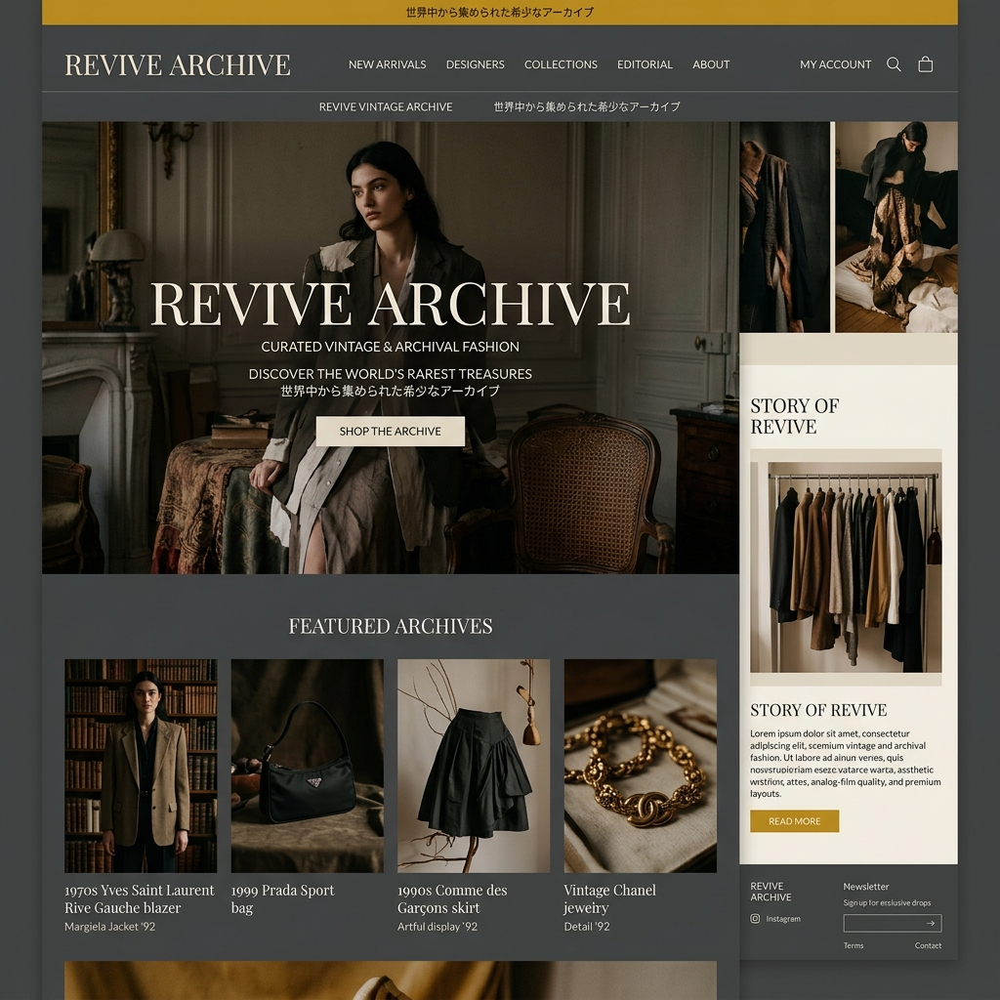

FASHION TECH / AR
スマホのカメラが、
スマホのカメラが、
世界最強の「試着室」になる。
VIRTUAL-FITTINGは、AIによる高精度なボディスキャンと物理演算を用いた衣服のARシミュレーションにより、「試着せずに服を買う不安」を完全に解消するアパレル向けプラグインです。

THE RETURN RATE
ECアパレル最大の壁「サイズ不安と返品」
「ネットで服を買うと、届いた時にイメージと違う」。この不安が購入率（コンバージョン）を下げ、また大量の返品処理がアパレル企業の利益を激しく圧迫しています。
PHYSICS ENGINE
布の「揺れ」や「シワ」まで計算するAI
ミリ単位の3Dボディスキャン
スマホのカメラで全身をぐるりと撮影するだけで、AIが身長、肩幅、ウエストなどを正確に計測し、あなたのデジタルツインを作成します。
布の物理演算（クロスシミュレーション）
シルクの柔らかさや、デニムの硬さ。素材ごとの重力や摩擦を計算し、「歩いた時にどうシワが寄るか」までをリアルタイムでシミュレーションします。
既存のECサイトへの簡単組み込み
ブランド側は服のパターン（型紙）データをアップロードするだけ。既存のShopifyなどのサイトに1行のコードで「AR試着ボタン」を追加できます。
VIRTUAL CLOSET
手持ちの服との「バーチャル着回し」
過去に買った服のデータを保存。新しく買おうとしているジャケットが、手持ちのパンツと合うかどうかを画面上で組み合わせて確認できます。
ON-DEMAND SHIFT
環境に優しい「受注生産」へのシフト
ユーザーがバーチャルで試着し、本当に欲しいものだけを生産する。大量生産・大量廃棄のアパレル業界の構造を根本から変革します。
CLIENT SUCCESS
Case Study | D2Cファッションブランド
VIRTUAL-FITTING導入後、サイズ違いによる返品率が40%低下。同時に「試着の楽しさ」が話題を呼び、SNS経由の売上が2倍に跳ね上がりました。
OUR VISION
ファッションの自由を、すべての体型に
「自分に似合う服がわからない」という悩みをテクノロジーで解決し、誰もが自信を持ってファッションを楽しめる世界を創ります。